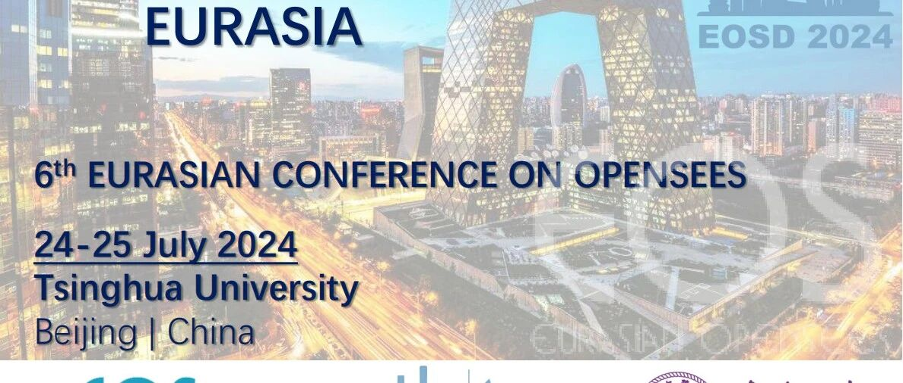

第六届OpenSees Days学术会议三号通知（摘要延期至5月10日）

第六届OpenSees Days学术会议
（摘要延期至5月10日）
2024年7月24-25日
中国·北京 清华大学
会议网站已上线
★ 网站内容更新：
为给大家预留更充足的时间投稿，本次会议的摘要提交截止时间延后至2024年5月10日，摘要评审截止时间延后至2024年5月15日。
更新了keynote speakers名单。
★ 会议网站：
本次会议网站已正式上线，拟参会学者可获取本次会议的详细信息，会议官网：
https://openseesdays2024.civil.tsinghua.edu.cn/
★ 会议注册：
参会学者可在网站registration模块填写个人信息注册账号

★ 会议投稿：
本次会议采用摘要的投稿方式。投稿摘要的学者可注册后，在Contributions Submission模块下载摘要格式，并按要求于2024年5月10日前提交。所有投稿摘要经过同行专家评审后，确定分会报告安排

★ 会议缴费：
网站会议缴费功能即将上线
会议简介
★ OpenSees（Open System for Earthquake Engineering Simulation）是由太平洋地震工程中心（PEER）创建的一个面向对象的开源软件框架，主要用于模拟结构和岩土系统在地震作用下的响应。OpenSees已被广泛应用于相关研究和实际工程中。
★ 自2006年以来，旨在交流OpenSees软件开发与应用的OpenSees Days在世界各地定期开展活动，包括美国加州UC伯克利的OpenSees Days 2012、意大利萨莱尔诺大学举办的OpenSees Days 2015、葡萄牙波尔图大学举办的欧洲OpenSees Days 2017、香港理工大学举办的欧亚OpenSees Days 2019，意大利都灵理工大学举办欧亚OpenSees Days 2022。2024年，欧亚OpenSees Days 2024将在中国北京举办。
★ 会议主要包括地震工程及其相关延伸领域的研究主题，如结构健康监测（SHM）、结构的参数化设计、岩土工程抗震以及土-结构相互作用研究等。会议旨在帮助不同领域的研究人员交流OpenSees使用和开发经验，共同促进有关OpenSees的前沿研究和思想碰撞。
★ 此外，在会议开始前的7月22-23日将举办OpenSees应用培训课程，帮助广大师生学习OpenSees软件的使用。

2024 OpenSees Days
重要时间节点
摘要提交截止：2024年5月10日
摘要评审截止：2024年5月15日
全文提交(可选)：2024年10月1日
Early-bird 注册截止时间：2024年5月31日
OpenSees课程：2024年7月22-23日
会议时间：2024年7月24-25日
论文全文提交截止日期为2024年10月1日，被接收的论文将发表在Lecture Notes in Civil Engineering (Springer) ，并索引于Elsevier SCOPUS。
2024 OpenSees Days
会议费用
课程费用
线下出席：€ 150/ ¥ 1150 (含餐)
线上参加：€ 100/ ¥ 750
会议费用
线下出席(专家): € 320/ ¥ 2500 (Early); € 380/ ¥ 3000 (Late)
线下出席(学生): € 200/ ¥ 1500 (Early); € 250/ ¥ 2000 (Late)
线上参加，不做报告：€ 100/ ¥ 750 (Early); € 150/ ¥ 1150 (Late)
注：每位现场代表可以口头汇报一篇论文。
费用包括：出席会议，并包含茶歇、午餐和社交晚宴，以及一年ASDEA Scientific ToolKit for OpenSees (STKO)免费学术许可证。
2024 OpenSees Days
学术委员会
Giorgio Monti, Filip Filippou, Frank McKenna, Fabio Di Trapani , Giuseppe Quaranta, Enrico Spacone, José Miguel Castro, Xavier Romão, Asif Usmani, Humberto Varum, Joel Conte, Kazuhiko Kasai, Cristoforo Demartino, Christos Zeris, Dimitrios Lignos, Michael Scott, Fabrizio Mollaioli, Massimo Petracca, Liming Jiang, Lizhong Jiang, Zhongguo Guan, Rui Wang, Longhe Xu, Zhaodong Xu.
2024 OpenSees Days
组委会
Xinzheng Lu, Fabio Di Trapani, Cristoforo Demartino, Giorgio Monti, Antonio Sberna, Linlin Xie, Kaiqi Lin, Yuan Tian, Donglian Gu, Yongjia Xu.
2024 OpenSees Days
Keynote (持续更新中)

Anastasios Sextos
Professor
University of Bristol

Guido Camata
Professor
University of Chieti-Pescara
Techmical director of ASDEA

Maha Kenawy
Assistant Professor
Oklahoma State University
2024 OpenSees Days
会务组联系方式
官方网站：
https://openseesdays2024.civil.tsinghua.edu.cn/
相关信息
---End---